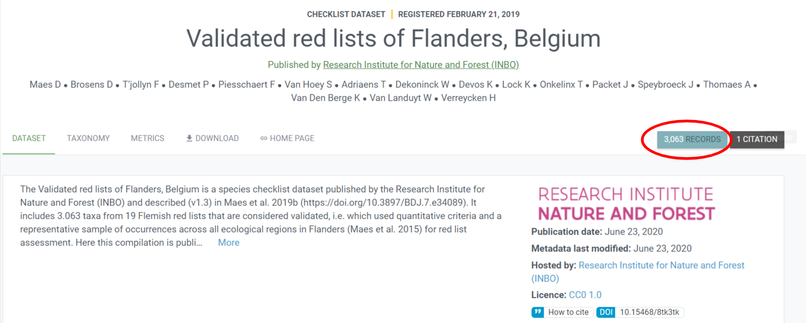
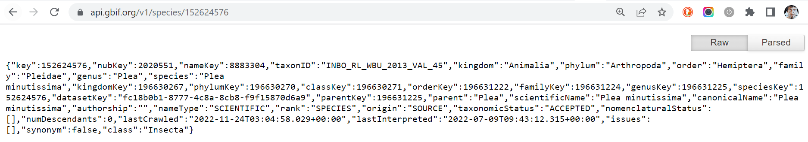
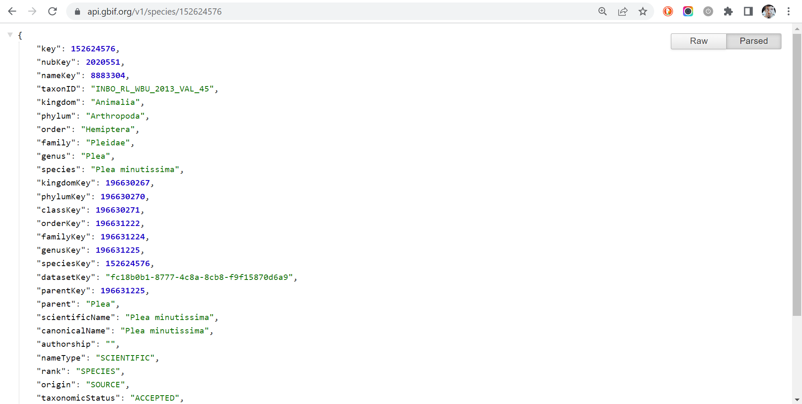

Get species checklist data from GBIF with rgbif
How to use rgbif function `name_usage()` to get species checklist data from GBIF as well as some other rgbif tips.
Introduction
The R package rgbif is a R wrapper to the GBIF API which allows you to get data from GBIF directly in your R session. The package is very well documented. Please, look at the articles on how to:
- setup your GBIF username and password
- get occurrence data
- work with taxonomy related functions
- match and download a long species list
So, why write another tutorial about rgbif? Because I think you can benefit from these short instructions to get a (species) checklist dataset from GBIF without having to read through all the documentation.
library(tidyverse) # To do datascience
library(rgbif) # To lookup names in the GBIF backbone taxonomy
library(knitr)
Retrieve a GBIF checklist dataset in R
You want to load the Validated red lists of Flanders, Belgium checklist in your R session.
The URL of this checklist contains important information: the
datasetKey, which is the alphanumeric string following the prefix
https://www.gbif.org/dataset/. In our case:
datasetKey <- "fc18b0b1-8777-4c8a-8cb8-f9f15870d6a9"
You need to run the name_usage() rgbif function using the argument
datasetKey
red_list <- name_usage(datasetKey = datasetKey)
You get a list of two:
names(red_list)
## [1] "meta" "data"
The slot meta contains metadata:
red_list$meta
## # A tibble: 1 × 3
## offset limit endOfRecords
## <int> <int> <lgl>
## 1 0 100 FALSE
which are sometimes very important! In our case, for example, we can see
that we didn’t download all the data as endOfRecords is FALSE. The
reason is that name_usage has an argument called limit which is the
number of records to return. The default value is 100.
To get all the taxa we need to specify a sufficiently high number, e.g. 10000. The hard limit of the API is ten times bigger, 100k, which is an extremely high number for such kind of datasets:
red_list <- name_usage(datasetKey = datasetKey, limit = 10000)
Now we should have all taxa:
red_list$meta$endOfRecords
## [1] TRUE
Let’s check the taxa in slot data:
kable(red_list$data[1:10,])
| key | nubKey | nameKey | taxonID | kingdom | phylum | order | family | genus | species | kingdomKey | phylumKey | classKey | orderKey | familyKey | genusKey | speciesKey | datasetKey | parentKey | parent | scientificName | canonicalName | authorship | nameType | rank | origin | taxonomicStatus | nomenclaturalStatus | numDescendants | lastCrawled | lastInterpreted | issues | synonym | class |
|---|---|---|---|---|---|---|---|---|---|---|---|---|---|---|---|---|---|---|---|---|---|---|---|---|---|---|---|---|---|---|---|---|---|
| 152624576 | 2020551 | 8883304 | INBO_RL_WBU_2013_VAL_45 | Animalia | Arthropoda | Hemiptera | Pleidae | Plea | Plea minutissima | 196630267 | 196630270 | 196630271 | 196631222 | 196631224 | 196631225 | 152624576 | fc18b0b1-8777-4c8a-8cb8-f9f15870d6a9 | 196631225 | Plea | Plea minutissima | Plea minutissima | SCIENTIFIC | SPECIES | SOURCE | ACCEPTED | NA | 0 | 2022-11-24T03:04:58.029+00:00 | 2022-07-09T09:43:12.315+00:00 | FALSE | Insecta | ||
| 152624577 | 4926451 | 5755267 | INBO_RL_PLA_2006_VAL_537 | Plantae | Tracheophyta | Isoetales | Isoetaceae | Isoetes | Isoetes echinospora | 196630540 | 196631273 | 196632770 | 196632772 | 196632774 | 196632775 | 152624577 | fc18b0b1-8777-4c8a-8cb8-f9f15870d6a9 | 196632775 | Isoetes | Isoetes echinospora Durieu | Isoetes echinospora | Durieu | SCIENTIFIC | SPECIES | SOURCE | ACCEPTED | NA | 0 | 2022-11-24T03:04:58.029+00:00 | 2022-07-09T09:43:17.826+00:00 | FALSE | Lycopsida | |
| 152624582 | 5152464 | 9652230 | INBO_RL_WBU_2013_VAL_46 | Animalia | Arthropoda | Hemiptera | Nepidae | Ranatra | Ranatra linearis | 196630267 | 196630270 | 196630271 | 196631222 | 196631276 | 196631281 | 152624582 | fc18b0b1-8777-4c8a-8cb8-f9f15870d6a9 | 196631281 | Ranatra | Ranatra linearis | Ranatra linearis | SCIENTIFIC | SPECIES | SOURCE | ACCEPTED | NA | 0 | 2022-11-24T03:04:58.029+00:00 | 2022-07-09T09:43:12.567+00:00 | FALSE | Insecta | ||
| 152624585 | 2688345 | 6532778 | INBO_RL_PLA_2006_VAL_628 | Plantae | Tracheophyta | Lycopodiales | Lycopodiaceae | Lycopodiella | Lycopodiella inundata | 196630540 | 196631273 | 196632770 | 196632777 | 196632778 | 196632782 | 152624585 | fc18b0b1-8777-4c8a-8cb8-f9f15870d6a9 | 196632782 | Lycopodiella | Lycopodiella inundata (L.) Holub | Lycopodiella inundata | (L.) Holub | SCIENTIFIC | SPECIES | SOURCE | ACCEPTED | NA | 0 | 2022-11-24T03:04:58.029+00:00 | 2022-07-09T09:43:17.840+00:00 | FALSE | Lycopsida | |
| 152624586 | 5152456 | 7481479 | INBO_RL_WBU_2013_VAL_37 | Animalia | Arthropoda | Hemiptera | Nepidae | Nepa | Nepa cinerea | 196630267 | 196630270 | 196630271 | 196631222 | 196631276 | 196631278 | 152624586 | fc18b0b1-8777-4c8a-8cb8-f9f15870d6a9 | 196631278 | Nepa | Nepa cinerea | Nepa cinerea | SCIENTIFIC | SPECIES | SOURCE | ACCEPTED | NA | 0 | 2022-11-24T03:04:58.029+00:00 | 2022-07-09T09:43:12.561+00:00 | FALSE | Insecta | ||
| 152624589 | 2688393 | 6533650 | INBO_RL_PLA_2006_VAL_630 | Plantae | Tracheophyta | Lycopodiales | Lycopodiaceae | Lycopodium | Lycopodium clavatum | 196630540 | 196631273 | 196632770 | 196632777 | 196632778 | 196632787 | 152624589 | fc18b0b1-8777-4c8a-8cb8-f9f15870d6a9 | 196632787 | Lycopodium | Lycopodium clavatum L. | Lycopodium clavatum | L. | SCIENTIFIC | SPECIES | SOURCE | ACCEPTED | NA | 0 | 2022-11-24T03:04:58.029+00:00 | 2022-07-09T09:43:17.851+00:00 | FALSE | Lycopsida | |
| 152624591 | 2688369 | 6532520 | INBO_RL_PLA_2006_VAL_629 | Plantae | Tracheophyta | Lycopodiales | Lycopodiaceae | Lycopodium | Lycopodium annotinum | 196630540 | 196631273 | 196632770 | 196632777 | 196632778 | 196632787 | 152624591 | fc18b0b1-8777-4c8a-8cb8-f9f15870d6a9 | 196632787 | Lycopodium | Lycopodium annotinum L. | Lycopodium annotinum | L. | SCIENTIFIC | SPECIES | SOURCE | ACCEPTED | NA | 0 | 2022-11-24T03:04:58.029+00:00 | 2022-07-09T09:43:17.849+00:00 | FALSE | Lycopsida | |
| 152624592 | 4485490 | 7623379 | INBO_RL_WBU_2013_VAL_43 | Animalia | Arthropoda | Hemiptera | Notonectidae | Notonecta | Notonecta viridis | 196630267 | 196630270 | 196630271 | 196631222 | 196631298 | 196631299 | 152624592 | fc18b0b1-8777-4c8a-8cb8-f9f15870d6a9 | 196631299 | Notonecta | Notonecta viridis | Notonecta viridis | SCIENTIFIC | SPECIES | SOURCE | ACCEPTED | NA | 0 | 2022-11-24T03:04:58.029+00:00 | 2022-07-09T09:43:12.626+00:00 | FALSE | Insecta | ||
| 152624594 | 2020518 | 7623100 | INBO_RL_WBU_2013_VAL_40 | Animalia | Arthropoda | Hemiptera | Notonectidae | Notonecta | Notonecta maculata | 196630267 | 196630270 | 196630271 | 196631222 | 196631298 | 196631299 | 152624594 | fc18b0b1-8777-4c8a-8cb8-f9f15870d6a9 | 196631299 | Notonecta | Notonecta maculata | Notonecta maculata | SCIENTIFIC | SPECIES | SOURCE | ACCEPTED | NA | 0 | 2022-11-24T03:04:58.029+00:00 | 2022-07-09T09:43:12.615+00:00 | FALSE | Insecta | ||
| 152624595 | 2688495 | 19956112 | INBO_RL_PLA_2006_VAL_515 | Plantae | Tracheophyta | Lycopodiales | Lycopodiaceae | Huperzia | Huperzia selago | 196630540 | 196631273 | 196632770 | 196632777 | 196632778 | 196632785 | 152624595 | fc18b0b1-8777-4c8a-8cb8-f9f15870d6a9 | 196632785 | Huperzia | Huperzia selago (L.) Bernh. ex Schrank et C.F.P. Mart. | Huperzia selago | (L.) Bernh. ex Schrank & C.F.P.Mart. | SCIENTIFIC | SPECIES | SOURCE | ACCEPTED | NA | 0 | 2022-11-24T03:04:58.029+00:00 | 2022-07-09T09:43:17.844+00:00 | FALSE | Lycopsida |
But what do those keys stay for?
key(sometimes calledtaxonKey) is the taxon identifier assigned by GBIF. The same taxon in different checklists will have a differentkey.taxonIDis the taxon identifier as provided by the authors. The authors should keep it stable between publications.nubKeyis the taxon identifier within the GBIF Backbone Taxonomy dataset, or simply backbone. The same taxon in different checklists will have the samenubKey. The link between the taxon in the checklist and the taxon in the backbone is automatically created by GBIF behind the scenes when publishing a checklist. You can control the match before publication of course, by using the gbif match utility in rgbif (see the vignette match and download a long species list) or the GBIF data validator web tool.kingdomKey,phylumKey,classKey,orderKey,familyKey,genusKey,speciesKey,parentKey: keys referring to the taxon classification as proposed in the checklist dataset. Notice that if the taxon is a species,keyandspeciesKeyare the same. Keep in mind that the classication can be different than the classification in the backbone. Not all checklists are published with such detailed taxonomic classification. For example, the LIFE RIPARIAS target species list contains only the kingdom the taxa belong to. So, onlykingdomKeyandspeciesKeyare present.
Notice also that all these taxonomic related keys point to specific web
pages on the GBIF website. You need only to add the prefix
https://www.gbif.org/species/. For example, the first taxon has key
152624576 and the corresponding webpage is
https://www.gbif.org/species/152624576, while its nubkey, 2020551,
points to the webpage of the taxon as mentioned in the backbone:
https://www.gbif.org/species/2020551.
Now, let’s check how many taxa you got:
nrow(red_list$data)
## [1] 4771
However, the webpage on GBIF says 3036 records

Who lies?!? Nobody, actually. The reason is the taxonomic classification
added to each taxon. How to get the 3036 records of the red list? And
which taxa are actually part of the added classification? The column
origin is what we need!
red_list$data %>%
count(origin)
## # A tibble: 2 × 2
## origin n
## <chr> <int>
## 1 DENORMED_CLASSIFICATION 1708
## 2 SOURCE 3063
You need then to filter on origin with value "SOURCE":
red_list_taxa <- red_list$data %>% filter(origin == "SOURCE")
nrow(red_list_taxa)
## [1] 3063
Retrieve non taxonomic information from a GBIF checklist in R
A checklist dataset is not always only a list of taxa: it can be enriched by extensions containing information about e.g. the distribution, the species profile or other less strict defined information described in the description extension.
How to get this information in R? Unfortunately, this information is linked to the taxon, not to the checklist dataset as a whole. In other words, you get an error if you try this:
distribution <- name_usage(datasetKey = datasetKey, data = "distribution")
Error in exists(z, private$crul_h_pool) : invalid first argument
You need a loop over all the taxa (key):
distribution <-
red_list_taxa %>%
pull(key) %>%
map_dfr(., function(x) {
distribution_details <-name_usage(x, data = "distribution")
return(distribution_details$data)
}
)
Overview:
kable(distribution[1:10,])
| taxonKey | locationId | locality | country | temporal | threatStatus | establishmentMeans | source | remarks |
|---|---|---|---|---|---|---|---|---|
| 152624576 | ISO_3166:BE-VLG | Flanders | BE | 2013 | LEAST_CONCERN | NATIVE | Lock et al. (2013) | Momenteel niet in gevaar |
| 152624577 | ISO_3166:BE-VLG | Flanders | BE | 2006 | CRITICALLY_ENDANGERED | NATIVE | Van Landuyt et al. (2006) | Met verdwijning bedreigd |
| 152624582 | ISO_3166:BE-VLG | Flanders | BE | 2013 | LEAST_CONCERN | NATIVE | Lock et al. (2013) | Momenteel niet in gevaar |
| 152624585 | ISO_3166:BE-VLG | Flanders | BE | 2006 | LEAST_CONCERN | NATIVE | Van Landuyt et al. (2006) | Momenteel niet bedreigd |
| 152624586 | ISO_3166:BE-VLG | Flanders | BE | 2013 | LEAST_CONCERN | NATIVE | Lock et al. (2013) | Momenteel niet in gevaar |
| 152624589 | ISO_3166:BE-VLG | Flanders | BE | 2006 | ENDANGERED | NATIVE | Van Landuyt et al. (2006) | Bedreigd |
| 152624591 | ISO_3166:BE-VLG | Flanders | BE | 2006 | REGIONALLY_EXTINCT | NATIVE | Van Landuyt et al. (2006) | Verdwenen uit Vlaanderen en het Brussels Gewest |
| 152624592 | ISO_3166:BE-VLG | Flanders | BE | 2013 | LEAST_CONCERN | NATIVE | Lock et al. (2013) | Momenteel niet in gevaar |
| 152624594 | ISO_3166:BE-VLG | Flanders | BE | 2013 | LEAST_CONCERN | NATIVE | Lock et al. (2013) | Momenteel niet in gevaar |
| 152624595 | ISO_3166:BE-VLG | Flanders | BE | 2006 | CRITICALLY_ENDANGERED | NATIVE | Van Landuyt et al. (2006) | Met verdwijning bedreigd |
This step is slower than retrieving the taxonomic information as we need 3036 calls to the API, one per taxon, instead of one.
Can you find this information on the GBIF website? Of course! All
information about the extensions is shown on the taxon page. Below a
screenshot showing the section related to the distribution extension for
Plea minutissima (key:
152624576):

Cite the checklist dataset
If the (checklist) dataset you used is worth to be cited, you can
retrieve the citation by running gbif_citation() function:
gbif_citation(x = datasetKey)
## <<rgbif citation>>
## Citation: Maes D, Brosens D, T’jollyn F, Desmet P, Piesschaert F, Van Hoey
## S, Adriaens T, Dekoninck W, Devos K, Lock K, Onkelinx T, Packet J,
## Speybroeck J, Thomaes A, Van Den Berge K, Van Landuyt W, Verreycken H
## (2020). Validated red lists of Flanders, Belgium. Version 1.7. Research
## Institute for Nature and Forest (INBO). Checklist dataset
## https://doi.org/10.15468/8tk3tk accessed via GBIF.org on 2022-12-15..
## Accessed from R via rgbif (https://github.com/ropensci/rgbif) on
## 2022-12-15
## Rights: http://creativecommons.org/publicdomain/zero/1.0/legalcode
INBO datasets on GBIF
INBO is an official GBIF publisher. Do you want to know which datasets have been published so far by INBO? You can have a look via this link:
https://www.gbif.org/dataset/search?publishing_org=1cd669d0-80ea-11de-a9d0-f1765f95f18b
You can finetune the search by selecting the type of the datasets. For example, for checklist datasets:
Can you do this in R? Of course. Use the rgbif function
dataset_search() specifying INBO’s ID as publishing organization.
Again, you get a list with two slots, meta and data. Guess where the
datasets are :-)
INBO_datasets <- dataset_search(
publishingOrg = "1cd669d0-80ea-11de-a9d0-f1765f95f18b"
)
INBO_datasets$data
## # A tibble: 92 × 8
## datasetTitle datas…¹ type hosti…² hosti…³ publi…⁴ publi…⁵ publi…⁶
## <chr> <chr> <chr> <chr> <chr> <chr> <chr> <chr>
## 1 Florabank1 - A grid-ba… 271c44… OCCU… Resear… 1cd669… Resear… 1cd669… BE
## 2 LBBG_ZEEBRUGGE - Lesse… 355b8f… OCCU… Resear… 1cd669… Resear… 1cd669… BE
## 3 DAISIE - Inventory of … 39f36f… CHEC… Resear… 1cd669… Resear… 1cd669… BE
## 4 HG_OOSTENDE - Herring … 6c860e… OCCU… Resear… 1cd669… Resear… 1cd669… BE
## 5 Watervogels - Winterin… 7f9eb6… SAMP… Resear… 1cd669… Resear… 1cd669… BE
## 6 RINSE - Registry of no… 3f5e93… CHEC… Resear… 1cd669… Resear… 1cd669… BE
## 7 O_VLIELAND - Eurasian … cd1590… OCCU… Resear… 1cd669… Resear… 1cd669… BE
## 8 Vlinderdatabank - Butt… 7888f6… OCCU… Resear… 1cd669… Resear… 1cd669… BE
## 9 VIS - Fishes in inland… 823dc5… OCCU… Resear… 1cd669… Resear… 1cd669… BE
## 10 Broedvogels - Atlas of… 81c5a0… OCCU… Resear… 1cd669… Resear… 1cd669… BE
## # … with 82 more rows, and abbreviated variable names ¹datasetKey,
## # ²hostingOrganization, ³hostingOrganizationKey, ⁴publishingOrganization,
## # ⁵publishingOrganizationKey, ⁶publishingCountry
To finetune the search as we did online, use type argument:
INBO_checklists <- dataset_search(
publishingOrg = "1cd669d0-80ea-11de-a9d0-f1765f95f18b",
type = "checklist"
)
INBO_checklists$data
## # A tibble: 15 × 8
## datasetTitle datas…¹ type hosti…² hosti…³ publi…⁴ publi…⁵ publi…⁶
## <chr> <chr> <chr> <chr> <chr> <chr> <chr> <chr>
## 1 DAISIE - Inventory of … 39f36f… CHEC… Resear… 1cd669… Resear… 1cd669… BE
## 2 RINSE - Registry of no… 3f5e93… CHEC… Resear… 1cd669… Resear… 1cd669… BE
## 3 Validated red lists of… fc18b0… CHEC… Resear… 1cd669… Resear… 1cd669… BE
## 4 Non-validated red list… 2fc239… CHEC… Resear… 1cd669… Resear… 1cd669… BE
## 5 Ad hoc checklist of al… 1f3505… CHEC… Resear… 1cd669… Resear… 1cd669… BE
## 6 National checklists an… f9af6f… CHEC… Resear… 1cd669… Resear… 1cd669… BE
## 7 Checklist of alien bir… e1c3be… CHEC… Resear… 1cd669… Resear… 1cd669… BE
## 8 RINSE - Pathways and v… 1738f2… CHEC… Resear… 1cd669… Resear… 1cd669… BE
## 9 Registry of introduced… e082b1… CHEC… Resear… 1cd669… Resear… 1cd669… BE
## 10 Checklist of alien her… a12e2b… CHEC… Resear… 1cd669… Resear… 1cd669… BE
## 11 Checklist of alien spe… 222119… CHEC… Resear… 1cd669… Resear… 1cd669… BE
## 12 Red list of dragonflie… 72aa79… CHEC… Resear… 1cd669… Resear… 1cd669… BE
## 13 RIPARIAS target specie… fd004d… CHEC… Resear… 1cd669… Resear… 1cd669… BE
## 14 Checklist of non-nativ… 98940a… CHEC… Resear… 1cd669… Resear… 1cd669… BE
## 15 Checklist of alien par… 2c0fb6… CHEC… Resear… 1cd669… Resear… 1cd669… BE
## # … with abbreviated variable names ¹datasetKey, ²hostingOrganization,
## # ³hostingOrganizationKey, ⁴publishingOrganization,
## # ⁵publishingOrganizationKey, ⁶publishingCountry
INBO as hosting organization
INBO is not only a GBIF publisher. It also hosts GBIF data for many other organisations. How to get all hosted datasets? By selecting INBO in the field “Host”:
Online: https://www.gbif.org/dataset/search?hosting_org=1cd669d0-80ea-11de-a9d0-f1765f95f18b
In R, by using the argument hostingOrg within function
dataset_search():
datasets_hosted_by_inbo <- dataset_search(
hostingOrg = "1cd669d0-80ea-11de-a9d0-f1765f95f18b",
limit = 1000)
datasets_hosted_by_inbo$data
## # A tibble: 117 × 8
## datasetTitle datas…¹ type hosti…² hosti…³ publi…⁴ publi…⁵ publi…⁶
## <chr> <chr> <chr> <chr> <chr> <chr> <chr> <chr>
## 1 Waarnemingen.be - Bird… e7cbb0… OCCU… Resear… 1cd669… Natuur… 4d3cee… BE
## 2 Florabank1 - A grid-ba… 271c44… OCCU… Resear… 1cd669… Resear… 1cd669… BE
## 3 Waarnemingen.be - Plan… bfc6fe… OCCU… Resear… 1cd669… Natuur… 4d3cee… BE
## 4 LBBG_ZEEBRUGGE - Lesse… 355b8f… OCCU… Resear… 1cd669… Resear… 1cd669… BE
## 5 DAISIE - Inventory of … 39f36f… CHEC… Resear… 1cd669… Resear… 1cd669… BE
## 6 Waarnemingen.be - Butt… 1f968e… OCCU… Resear… 1cd669… Natuur… 4d3cee… BE
## 7 Waarnemingen.be / obse… 2c38cf… CHEC… Resear… 1cd669… Natuur… 4d3cee… BE
## 8 HG_OOSTENDE - Herring … 6c860e… OCCU… Resear… 1cd669… Resear… 1cd669… BE
## 9 Waarnemingen.be - Non-… 9a0b66… OCCU… Resear… 1cd669… Natuur… 4d3cee… BE
## 10 Watervogels - Winterin… 7f9eb6… SAMP… Resear… 1cd669… Resear… 1cd669… BE
## # … with 107 more rows, and abbreviated variable names ¹datasetKey,
## # ²hostingOrganization, ³hostingOrganizationKey, ⁴publishingOrganization,
## # ⁵publishingOrganizationKey, ⁶publishingCountry
Notice again the limit argument with a sufficiently high number as
value. Exercise: check the meta slot to check if we got all records.
Which publishing organizations host GBIF data at INBO?
datasets_hosted_by_inbo$data %>%
distinct(publishingOrganization)
## # A tibble: 8 × 1
## publishingOrganization
## <chr>
## 1 Natuurpunt
## 2 Research Institute for Nature and Forest (INBO)
## 3 Invasive Species Specialist Group ISSG
## 4 Flanders Environment Agency (VMM)
## 5 Province East Flanders
## 6 Ghent University
## 7 RATO vzw
## 8 Agency for Nature and Forests (Flemish Government)
A nerdy touch: the GBIF API output
We said at the beginning of this tutorial that the information you get
via rgbif is harvested by using the GBIF API. So, the question is: can
you see the API output on the web as well? Answer is YES! You need some
prefixes and again the values in the field key. Below we use the taxon
Plea minutissima (key:
152624576) as example:
- taxonomic information: https://api.gbif.org/v1/species/152624576
- distribution information: https://api.gbif.org/v1/species/152624576/distributions
- description information: https://api.gbif.org/v1/species/152624576/descriptions
And the checklist dataset? Here you go:
https://api.gbif.org/v1/dataset/fc18b0b1-8777-4c8a-8cb8-f9f15870d6a9.
Notice the word dataset instead of species in the prefix.
Notice that all information exposed by the GBIF API is written using the JSON format. To parse it in a humanly readable way, you can use the Google Chrome extension JSON Formatter or another similar extension. The difference is impressive, isn’t?
Raw: 
Parsed: 